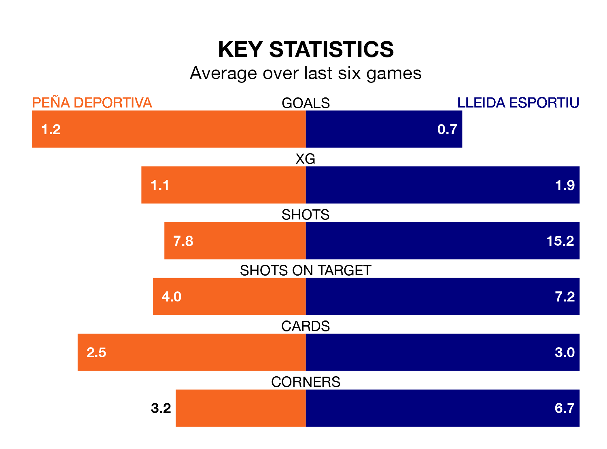

Peña Deportiva host Lleida Esportiu on Sunday at Campo Municipal del Santa Eulalia del Río in the Segunda División RFEF Group 3.
In their last league match, on February 11, Peña Deportiva lost to CF Badalona 2-1 away, with their goal scored by (own goal).
Lleida Esportiu won, 1-0 at home against Manresa.
Lleida Esportiu are second in the table after 22 games, of which they have won 13 and drawn three, earning 42 points.
Peña Deportiva are seven places behind the away team in ninth, with eight wins and six draws putting them on 30 points.
With 30 goals in 22 games so far this season, Lleida Esportiu are scoring more than average in the league with 1.4 goals per game. And they are conceding fewer than average, letting in 17 goals at a rate of 0.8 per game.
The hosts are also above average scorers, with 1.3 goals per game, compared to a league average of 1.2. They have conceded 1.6 goals per game.
In the last 10 years, Peña Deportiva and Lleida Esportiu have played each other on eight occasions. Peña Deportiva won one of them, Lleida Esportiu three, and they drew four times.
On average, Peña Deportiva scored 0.8 goals and Lleida Esportiu 1.0 in those matches.
Their last meeting was on October 8, when Lleida Esportiu won 3-2 at home.
Peña Deportiva are in mixed form in the Segunda División RFEF Group 3, with three wins and three losses from their last six games.
With two wins and a draw over that period, Lleida Esportiu's form is slightly worse – they have taken seven points from 18, compared to Peña Deportiva's nine.
Updated: 13:30 (UTC), 12/02/24